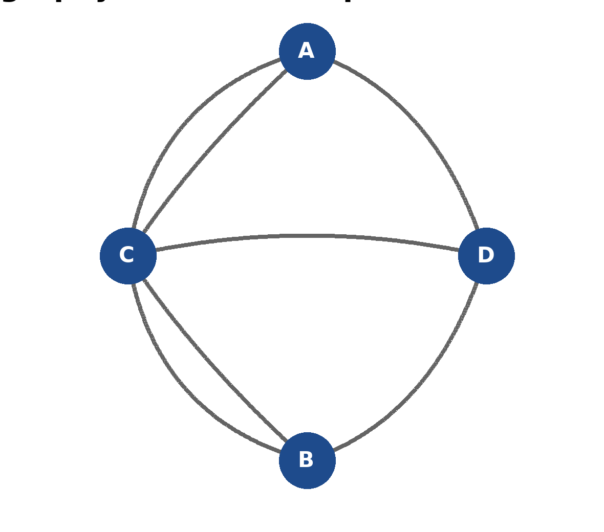

Seven Bridges of Königsberg
In the 1700s the city of Königsberg was built around two branches of a river, with an island sitting where they met. Seven bridges connected the four separate pieces of land – and the people of the city had a favourite Sunday puzzle: could you walk through the city and cross every one of the seven bridges exactly once?

Nobody could ever do it. Nobody could ever explain why, either – until a mathematician called Leonhard Euler looked at the problem in 1736, and realised something surprising: it doesn’t matter how big the islands are, how long the bridges are, or what order you visit things in. All that matters is which pieces of land are joined to which, and by how many bridges. That single idea – throw away the shape and the distance, keep only the connections – was the birth of an entire branch of mathematics: graph theory, and later, topology.
Find it in the gardens
This same puzzle has been laid out here in the Botanic Gardens. Look for four regions of the path network joined by logs standing in for the seven bridges. Before you read any further, go and try it for yourself: can you walk a route that crosses every log exactly once?
Try it here
Tap (or click) a landmass on the map below to start your walk, then tap the bridges (numbered 1-7, matching the logs in the gardens) to cross them one at a time. Try to use all seven bridges exactly once.
Turning it into a graph
Shrink each landmass down to a single dot – mathematicians call it a node (or vertex) – and shrink each bridge down to a line joining two dots – an edge. That’s it: you’ve just drawn the same map above as a graph. The exact size and shape don’t matter any more, only which dots are joined, and how many times.
Why is it impossible?
Count how many bridges touch each landmass – its degree:
- North bank: 3
- South bank: 3
- Island: 5
- East side: 3
Here’s Euler’s trick. Every time your walk passes through a landmass in the middle of your route (not starting or ending there), you use up two of its bridges at once: one to arrive, one to leave. So a landmass can only be left with a single, unpaired bridge – which makes it usable only as a start or an end point – if it has an odd number of bridges. A walk has exactly one start and one end, so at most two landmasses in the whole map are allowed to have an odd degree.
Königsberg has four landmasses with an odd degree – two more than is ever allowed. That’s not bad luck, and it’s not that nobody was clever enough: it’s a mathematical proof that no route can ever cross every bridge exactly once, no matter how hard you try or how many times you attempt it.
This same idea – turning a real problem into dots and connections, then reasoning about the connections alone – now underpins everything from delivery-route planning to computer chip design to mapping how a disease spreads through a network of people. It all traces back to seven bridges over a river in Königsberg, and one mathematician who realised the shape never mattered at all.